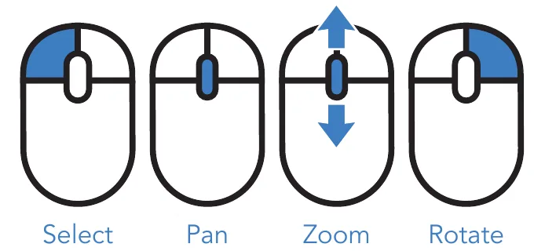
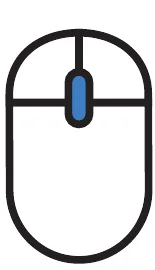
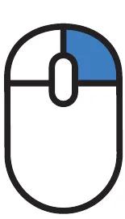
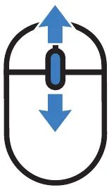

Getting Started
with CLO3D.
第一章｜认识 CLO3D。学习软件的基本工作逻辑、界面布局、视角控制，以及二维与三维工具。每个操作都从最简单的功能开始。
从二维版片到三维服装
CLO3D 是用于服装设计的三维数字软件。它通过二维版片、缝纫关系及面料模拟建立服装形态，因此不必从多边形开始建模。先理解这个流程，再学习工具会更容易。
认识工作界面
CLO3D 的核心是同时使用 3D Garment Window 和 2D Pattern Window。资源、对象和属性管理通常位于周边面板。先能够定位各区域，再开始绘制版片。
二维版片工具
先学习创建和编辑版片的工具，再学习缝纫。工具图片目前使用清晰的矢量功能示意，并非官方按钮截图；每张卡片附有官方教程链接，后续可将示意替换为对应版本的截图。
三维操作与模拟
三维工具用于调整版片在模特周围的位置，并计算布料垂坠。尤其要理解 Gizmo 是移动物体的操纵器，而 Simulation 是开始或停止物理计算的功能。
建立缝纫关系
缝纫工具告诉 CLO3D 哪些边线应该连接。Segment Sewing 用于整条线段的连接，Free Sewing 可以指定自由起止点。建立缝纫关系后，再启动模拟观察版片如何结合。
官方资料与图片说明
本教程的操作逻辑参考 CLO 官方帮助中心及入门手册。下方完整笔记已加入本地 CLO 界面截图；上方简化的工具插图仍是教学示意图，并非软件真实按钮。
第一章 · 详细图文讲义
补充收录此前 CLO3D BEGINNER’S GUIDE 的讲解、工具表格、课堂英文表达和配图参考。各章节的 CLO 截图均已存为本地资源，并与对应讲解配对。
软件原理与工作逻辑
CLO3D 是一款面向服装设计的三维数字制作软件。它将二维服装版片、缝纫关系、面料物理属性与三维模拟结合，使设计师能够在虚拟环境中制作、调整和展示服装。与主要通过多边形建模创建物体的 Blender 不同，CLO3D 的核心工作方式更接近真实的服装制作过程。
Pattern（版片）决定服装结构，Sewing（缝纫）定义版片之间的连接关系，Simulation（模拟）则计算重力、碰撞与面料属性对服装造型的影响。

课堂英文 / Classroom English
CLO3D is a 3D fashion design software. We create patterns in 2D, sew them together, and simulate the garment in 3D.
软件界面详解
CLO3D 可同时显示二维版片与三维服装。2D Pattern Window 用于绘制和编辑版片，3D Garment Window 用于检查穿着、视角和模拟效果。Library 提供资源，Object Browser 管理对象，而 Property Editor 用来调整选中对象的参数。
Object Browser 与 Property Editor 的区别尤为重要：前者主要用于查找和选取对象，后者用于编辑它的属性。单击不同面料，观察 Property Editor 中的参数变化。

| English | 中文 | 说明 / 操作 |
|---|---|---|
| 3D Garment Window | 三维服装窗口 | 查看服装、模特和模拟效果 |
| 2D Pattern Window | 二维版片窗口 | 绘制、编辑、缝纫版片 |
| Library | 资源库 | 查找模特、面料和素材 |
| Object Browser | 对象浏览器 | 管理面料、纽扣、线迹等对象 |
| Property Editor | 属性编辑器 | 更改选中对象的参数 |
| 3D Toolbar | 三维工具栏 | 三维选择、移动和模拟 |
| 2D Toolbar | 二维工具栏 | 绘制与修改二维版片 |
| History | 历史记录 | 管理历史操作状态 |
课堂英文 / Classroom English
Find the 3D Window, 2D Window, Object Browser and Property Editor. Click different objects and check which properties change.
鼠标与视角控制
视角操作是第一堂课需要反复练习的技能。默认 CLO 鼠标操作方式包括：鼠标左键单击选择，中键按住拖动平移，右键按住拖动旋转，滚动滚轮进行缩放。需要将平移视角与移动真实版片区分开。
多选通常可以结合 Shift 与选择工具完成；选择版片后按 F 可将视图聚焦到所选对象。其他视角预设和不同设备的操作方式可能不同，请根据授课版本确认。

| English | 中文 | 说明 / 操作 |
|---|---|---|
| Select | 选择 | Left click |
| Pan | 平移 | Middle-button drag |
| Rotate | 旋转 | Right-button drag |
| Zoom | 放大／缩小 | Mouse wheel |
| Focus | 聚焦 | F (selected pattern) |
| Context Menu | 快捷菜单 | Right click |



课堂英文 / Classroom English
Hold down the middle mouse button and drag to move the view. Hold down the right mouse button and drag to rotate the view. Scroll the mouse wheel to zoom in or out.
二维版片工具操作
先从 Transform Pattern 和 Edit Pattern 开始。Transform Pattern 用于调整整片版片的位置、旋转或缩放，而 Edit Pattern 用于改变点、边线和轮廓；不要为了修改领口弧度而缩放整块衣片。Rectangle 适合规则形状，Polygon 适合自由轮廓，Ellipse 适合圆形或椭圆形。
还应认识 Add Point / Split Line（添加点/分割线）、Edit Curvature（编辑曲率）和 Internal Line（内部线）。练习时先画一个矩形，再通过编辑点和曲线将它改为不规则轮廓。

| English | 中文 | 说明 / 操作 |
|---|---|---|
| Transform Pattern | 变换版片 | 对整个版片移动、旋转、缩放 |
| Edit Pattern | 编辑版片 | 修改边、点和局部轮廓 |
| Polygon | 多边形 | 绘制自由形状版片 |
| Rectangle | 矩形 | 绘制矩形版片 |
| Ellipse | 椭圆 | 绘制圆形或椭圆版片 |
| Add Point / Split Line | 添加点／分割线 | 增加控制点 |
| Edit Curvature | 编辑曲率 | 调整曲线形状 |
| Internal Polygon / Line | 内部多边形／线 | 绘制内部结构线 |
| Segment Sewing | 线段缝纫 | 连接两条完整边线 |
| Free Sewing | 自由缝纫 | 自定义缝合位置 |
课堂英文 / Classroom English
Select the Transform Pattern tool. Click on the pattern and drag it to a new position. Then select Edit Pattern and move a point to change the shape.
三维选择、安排与模拟
在三维空间中，Select / Move 用于选择并调整版片，Gizmo 是控制移动与旋转方向的操纵器，Arrangement 用于将版片安排在模特附近。学生必须区分 Move the View（移动观察视角）和 Move the Object（改变对象位置）。
Simulation 根据版片、缝纫、重力与碰撞计算布料垂坠。启动前先确认版片位置与缝合关系，否则版片可能掉落。不同版本的按钮与快捷键可能略有不同。

| English | 中文 | 说明 / 操作 |
|---|---|---|
| Select / Move | 选择／移动 | 选中并调整版片 |
| Gizmo | 变换操纵器 | 沿指定轴移动或旋转 |
| Arrangement | 版片安排 | 将版片安排在模特周围 |
| Simulation | 模拟 | 计算重力碰撞与垂坠 |
| Avatar | 虚拟模特 | 提供服装穿着参照 |
| Garment Rendering | 服装渲染 | 展示面料与外观 |
课堂英文 / Classroom English
Click on the pattern to select it. Use the Gizmo to move or rotate it. Click Simulation and wait for the fabric to settle.
缝纫工具操作
Segment Sewing（线段缝纫）将两块版片的完整边线连接；先单击第一条线段，再单击第二条线段创建缝纫关系。Free Sewing（自由缝纫）允许自行指定缝合的起始点与终点，适合局部缝合需求。
缝纫在二维版片之间建立连接关系，随后 Simulation 才会依据这些连接来计算布料。对于新手，建议先练习两块简单矩形布料的边缘缝合。

课堂英文 / Classroom English
Select the Segment Sewing tool. Click the first edge, then the second edge to connect them. Use Free Sewing to create a custom sewing line.
官方教程与动态演示链接
动态演示链接为官方网页，不代表已经将 GIF 嵌入当前 HTML。实际演示 GIF 建议按课堂版本自行录制，每段 3–6 秒循环，分别呈现平移、旋转、缩放、变换版片、编辑版片、缝纫与模拟。